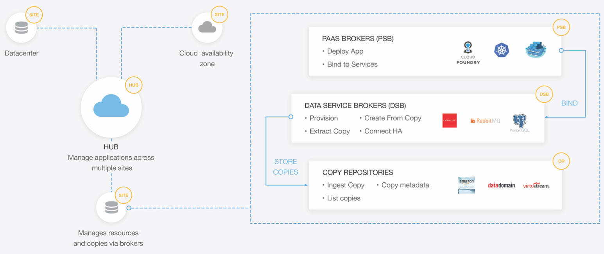

Ocopea Docs

Ocopea High Level Components
The real workhorses of Ocopea are Sites. Sites are the Ocopea representative on each physical location (geographical). A site could be an on-premises datacenter or a public cloud availability zone. The site component communicates with the kubernetes cluster (or other supported schedulers/PaaS) and manages all data resources available to the applications. It is identified by a user provided/public cloud name and its location (e.g. AWS US West2). The site does its work using a set of Brokers:
Data Service Broker (DSB)
Every data service such as databases, file systems, kubernetes volume, object store, messaging services, email etc. are interfaced to the site by a DSB. The DSB interface allows provisioning and managing the resources as well as monitoring health and status. DSBs are also in charge of keeping data interface compatibility if required to enable mobility of the application between platforms. They are also aware of SLOs of the service and may publish or adjust services accordingly. In our vision we see OSB encapsulating and deprecating the DSB concept.
PaaS Service Broker (PSB)
Each container scheduler has its own configuration parameters and runtime model. This solution focuses on kubernetes.The PSB interface will be able to provision and manage compute resources on the PaaS.
Copy Repository Broker (CRB)
Repositories are interfaces to manage and manipulate copies (usually passive copies). The interface will allow enumerating and retrieving copies and their metadata, create new copies, transfer copies to other copy repositories and restore copies to new locations. Copy repositories can decide to create copies on their own by schedule, event or any other reason. The important thing is that all copies be exposed to via the interface to the outside world so that the copies can be used. An example is a copy repository interface DataDomain instance. Another would be using Amazon glacier as a copy repository. copy repositories expose to DSB copy protocols to use for dumping copies (e.g. NFS share, S3 API etc.)
Ocopea Site and Hub
The Ocopea Site is the glue that makes an applications dance using extensible brokers. The brokers swagger definition are available [here][https://github.com/ocopea/orcs] - we welcome community brokers. While sites are a powerful construct, the real power comes from aggregating sites together into a fully managed multi-cloud fabric. The Hub is an optional Ocopea component that communicates with the different sites, combining the knowledge about health and status of all locations, merging copy information, and orchestrating operations across sites. The hub does not do any heavy lifting of data. All data transfer operations are done directly between the components that hold the data. In that sense the hub is a powerful orchestrator and matchmaker, like a huge Tinder in the sky.